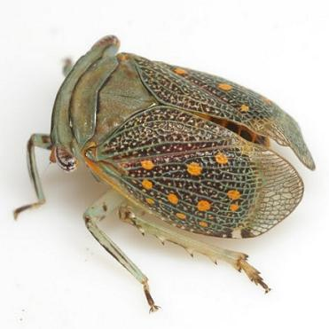

"Short-horned" Bugs of Texas
|
 |
Swezey, O.H. 1904. A preliminary catalogue of the described species of the family Fulgoridae of North America, north of Mexico. Ohio Dept. Agriculture 3: 1-48. (Full Text) (Treats all families of Fulgoroidea as subfamlies of Fulgoridae)
Van Duzee, E.P. 1917. Catalogue of the Hemiptera of American North of Mexico: Excepting the Aphididae, Coccidae and Aleurodidae. Vol. 2. University of California Press, Berkeley. i-xiv + 902 pp. (Full Text)